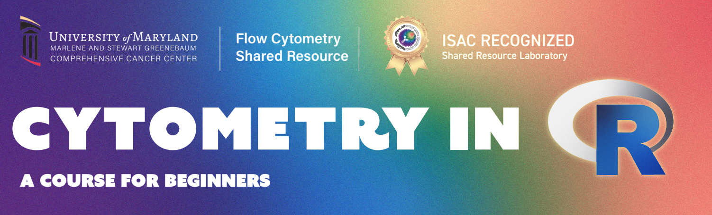

Slides
This is the repository for our Cyto 2023 “ILTs in HEU” poster.
Click here to navigate to the .pdf of the poster, which can be downloaded.
For our Cytometry in R course, click here.
For the InstrumentQC dashboard how-to website, click here
Click here for information about the Luciernaga R package.
For information about our Coereba R package, click here
GitHub repository organization.
The code to generate QR codes and extract survey comments in R can be found under the code_poster folder. Actual QR codes generated can be found under outputs folder. Images used that were brought in from other sources can be found in the images folder.
Abstract
Spectral flow cytometry analysis of Innate-like T cell responses in Malawian HIV-exposed Uninfected (HEU) Infants.
David Rach1, Hao-Ting Hsu2, Nginache Nampota3, Godfrey Mvula3, Felix A. Mkandawire3, Osward M. Nyirenda3, Ingrid Peterson4, Franklin R. Toapanta4, Marcelo B. Sztein4, Miriam Laufer4, Kirsten E. Lyke4, Cristiana Cairo2
1 Molecular Microbiology and Immunology Graduate Program, University of Maryland School of Medicine, Baltimore, USA. 2 Institute of Human Virology, University of Maryland School of Medicine, Baltimore, USA. 3 Blantyre Malaria Project, Kamuzu University of Health Sciences, Blantyre, Malawi. 4 Center for Vaccine Development and Global Health, University of Maryland School of Medicine, Baltimore, USA
Maternal antiretroviral therapy (ART) effectively prevents perinatal infection of infants born to HIV+ women. However, during the first six months of life HIV-exposed, uninfected (HEU) infants exhibit increased morbidity due to lower respiratory tract and diarrheal infections, compared to HIV unexposed (HU) infants. It is hypothesized that exposure to HIV and/or ART before birth perturbs the developing fetal immune system, which contributes to the increased infectious morbidity seen in HEU infants. The specific immunological mechanisms underlying this clinical outcome are still under investigation. To help understand the contribution of maternal viremia to infant immune perturbation, we are analyzing a cohort of Malawian infants with well-characterized prenatal HIV-exposure. Specifically, we are comparing three groups of infants born to women with: A) ART-treated HIV infection and undetectable viral load since before conception and through pregnancy (HEU-lo); B) HIV infection diagnosed and treated at mid-gestation or later, with high viral load at enrollment (HEU-hi); C) no HIV infection (HU).
Innate-like T cells (ILTs), including Natural Killer T cells (NKTs), Mucosal-associated Invariant T cells (MAITs), and Vg9Vd2 (Vd2) T cells may be perturbed due to elevated inflammation at the fetal maternal interface during maternal HIV infection. ILTs, which are thought to play important roles against pathogens in early life, are activated by microbial metabolites as well as by innate cytokines, mounting Th1-like and cytotoxic responses in the early phase of infection. The effect exerted by in utero HIV exposure on infant ILTs is unknown, as the markers required for their identification are not routinely included in conventional flow cytometry panels, and their low abundance in infant blood makes mass cytometry impractical for their assessment.
To overcome these limitations, we designed a 29-color spectral flow cytometry panel that allows for concomitant assessment of ILT subsets, employing human CD1d and MR1 tetramers to identify NKTs and MAITs, respectively. A preliminary analysis of cord blood specimens from neonates in our Malawian cohort by conventional flow cytometry has shown an increased Vd2 cell frequency, differentiation, and activation in HEU-hi infants, while the frequency of Vd2 cells producing IFNg or both INFg and TNFa upon polyclonal stimulation was significantly elevated in HEU-lo infants. In a distinct African cohort, HEU infants also displayed elevated MAIT frequency at birth. We thus incorporated markers that characterize ILT subset activation, differentiation, and function. The spectral flow cytometry results that we will present will be corroborated by direct comparison to conventional flow cytometry data. The implementation of this optimized spectral panel will allow a comprehensive profiling of these rare subsets in infants and help highlight effects arising in context of HIV prenatal exposure.
License
In our commitment to open-science and open-source, all teaching materials are freely offered under a CC-BY-SA license, while all code examples are offered under the AGPL3-0 copyleft license.